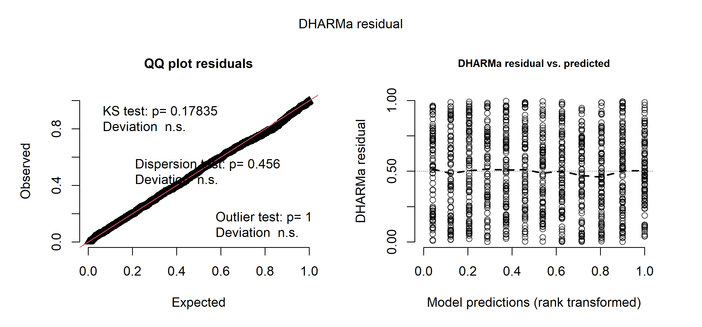
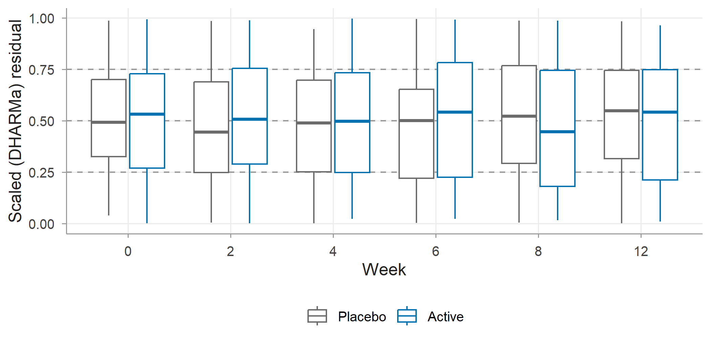
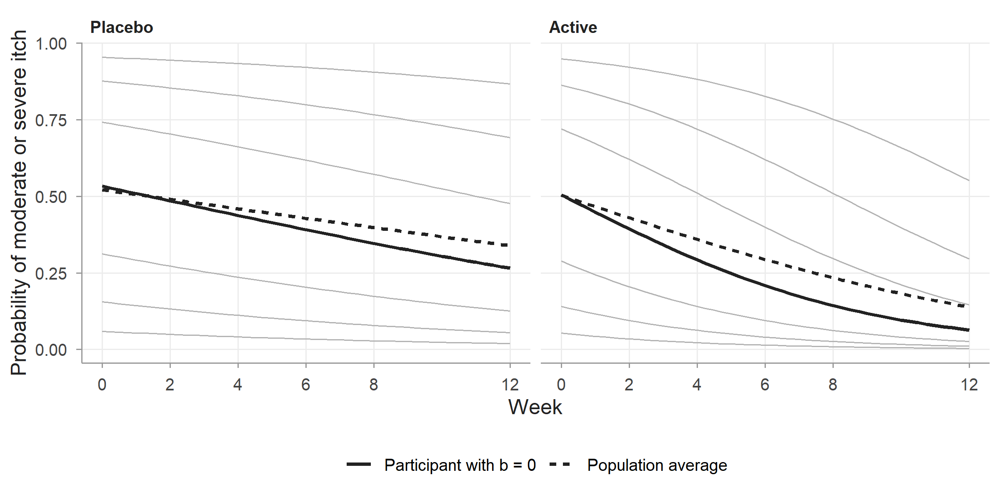
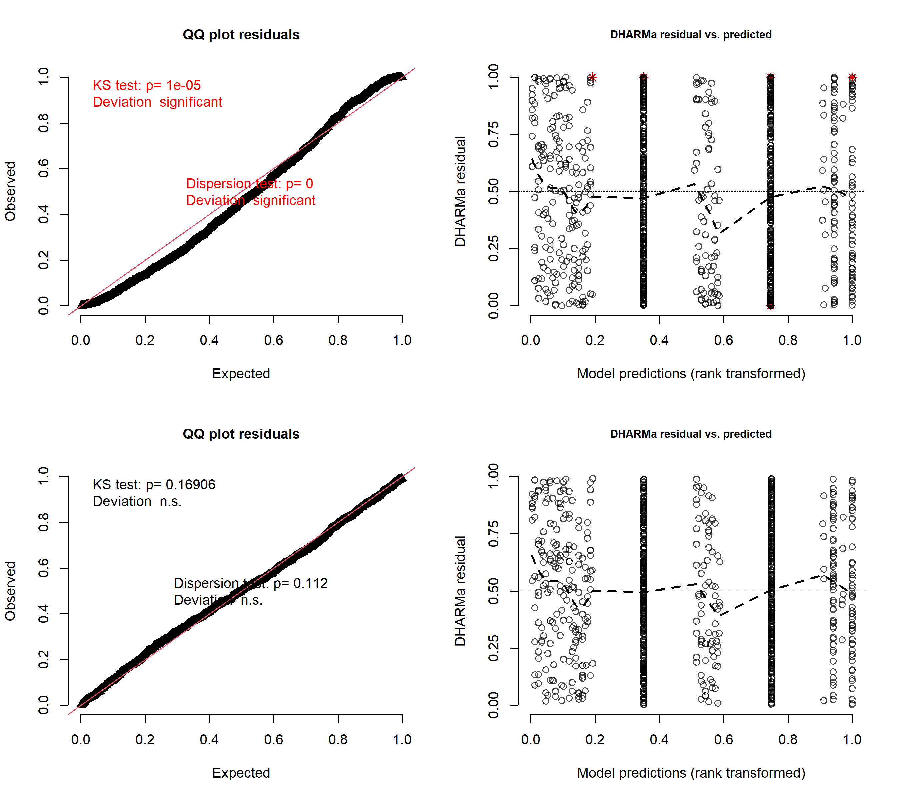

source(here::here("R", "setup.R"))
clear <- load_clear() |> arrange(id, week) |> mutate(age45 = (age - 45) / 10)
diary <- load_diary() |> arrange(id, period)
truth_clear <- readRDS(here("data", "clear_truth.rds"))
truth_diary <- readRDS(here("data", "diary_truth.rds"))
f2 <- function(x, d = 2) formatC(x, format = "f", digits = d)8 Generalized linear mixed models
Binary and count outcomes are everywhere in longitudinal studies: whether a participant has moderate or severe itch at each visit, how many days of migraine they record each month. Generalized linear mixed models (GLMMs) extend the linear mixed models of Module 4 to such outcomes by combining a generalized linear model for each observation with random effects that capture how participants differ. They describe how the outcome changes for a given participant, which makes their coefficients subject-specific (conditional) rather than population-average (marginal). For a logit link this distinction changes the numbers: a GLMM odds ratio and a GEE odds ratio from the same data are not estimates of the same quantity. This module fits logistic and count GLMMs, explains what their coefficients mean, shows numerically why they differ from GEE, turns them into predicted probabilities, expected counts and other summaries that readers can understand, and checks them with simulation-based residuals.
Learning outcomes
By the end of this module participants will be able to:
- 8.1 Fit and interpret logistic mixed models for repeated binary outcomes.
- 8.2 Fit Poisson and negative binomial mixed models with exposure offsets, and assess overdispersion and zero inflation only where they are justified.
- 8.3 Explain the conditional (subject-specific) interpretation of GLMM coefficients.
- 8.4 Explain, with a numerical example, why logistic GLMM and GEE coefficients differ, and when each is the right target.
- 8.5 Report predicted probabilities, expected counts and other interpretable effect summaries with uncertainty.
Prerequisites
Module 0 (logistic and Poisson regression, link functions), Module 4 (linear mixed models, random intercepts and slopes), Module 6 (estimated marginal means and contrasts with emmeans) and Module 7 (GEE and the population-average interpretation). Modules 7 and 8 can be studied in either order, but the comparison of GLMM and GEE in this module assumes Module 7.
WarningSimulated data
All examples use simulated data from fictional studies. Results illustrate methods; they are not empirical findings.
8.1 From generalized linear models to GLMMs
A generalized linear model has three parts: a distribution for the outcome (binomial, Poisson, negative binomial), a linear predictor \(\eta = \mathbf{x}^\top\boldsymbol\beta\), and a link function \(g(\cdot)\) connecting the mean to the linear predictor. A GLMM adds random effects to the linear predictor:
\[ g\{E(Y_{ij} \mid \mathbf{b}_i)\} = \mathbf{x}_{ij}^\top\boldsymbol\beta + \mathbf{z}_{ij}^\top\mathbf{b}_i, \qquad \mathbf{b}_i \sim N(\mathbf{0}, G), \]
and assumes that, given \(\mathbf{b}_i\), the observations of participant \(i\) are independent draws from the chosen distribution. Here \(\mathbf{x}_{ij}\) and \(\boldsymbol\beta\) are covariates and fixed effects, \(\mathbf{z}_{ij}\) is the random-effects design (a 1 for a random intercept), \(\mathbf{b}_i\) the random effects of participant \(i\) and \(G\) their covariance matrix (with variance \(\tau_0^2\) for a random intercept). The correlation between a participant’s repeated outcomes arises entirely from the shared \(\mathbf{b}_i\): a participant with a high random intercept tends to have itch at every visit.
The likelihood of a GLMM requires the distribution of each participant’s outcomes with the random effects integrated out,
\[ L_i(\boldsymbol\beta, G) = \int \prod_{j=1}^{n_i} f(y_{ij} \mid \mathbf{b}_i; \boldsymbol\beta)\, \varphi(\mathbf{b}_i; G)\, d\mathbf{b}_i, \]
where \(f\) is the binomial, Poisson or negative binomial probability and \(\varphi\) the normal density. For a linear mixed model this integral has a closed form. For a GLMM it does not, and software approximates it. The Laplace approximation replaces the integrand by a normal curve centred at its peak; it is fast and works for any number of random effects. Adaptive Gauss–Hermite quadrature (AGQ) evaluates the integrand at several well-chosen points around the peak and forms a weighted sum; with enough points it is as accurate as needed, but in lme4::glmer() it is available only for a single scalar random effect (a random intercept). Laplace is AGQ with one point (nAGQ = 1). The approximation matters most for binary outcomes with few observations per participant and a large random-effect variance, which is exactly the CLEAR situation.
8.2 Logistic mixed models for CLEAR
8.2.1 The research question and estimand
How do the odds of moderate or severe itch change over 12 weeks for a given participant, and how much faster do they fall on active treatment than on placebo? The estimand is the conditional (subject-specific) odds ratio for the additional weekly change on active treatment, together with the size of between-participant variation, and, for reporting, predicted probabilities on the probability scale.
8.2.2 Data structure and outcome types
CLEAR has 1044 visits from 200 participants (weeks 0, 2, 4, 6, 8, 12) in long format. The binary outcome itch is 1 when severity is moderate or severe. Participants have between 1 and 6 observations; dropout depended on the last observed severity (MAR), which a likelihood-based GLMM handles validly if the model is correct.
8.2.3 Intuition
Each participant has their own baseline propensity to itch, captured by a random intercept \(b_{0i}\) on the logit scale. Everyone in the same arm then follows a curve of the same shape on the logit scale, shifted up or down by their own \(b_{0i}\). A coefficient compares two situations for the same participant (same \(b_{0i}\)): for example, the same person one week later. Because participants differ a lot (the random-intercept SD in CLEAR is large), the probability of itch is close to 0 or 1 for many of them, and the individual curves are steep. The average over everyone of these steep curves is a flatter curve: that is the population-average curve GEE estimates.
8.2.4 The model
\[ \operatorname{logit} P(Y_{ij} = 1 \mid b_{0i}) = \beta_0 + \beta_1 t_{ij} + \beta_2\text{Active}_i + \beta_3 t_{ij}\text{Active}_i + b_{0i}, \qquad b_{0i} \sim N(0, \tau_0^2), \]
where \(Y_{ij}\) is the itch indicator for participant \(i\) at occasion \(j\), \(t_{ij}\) the week, \(\text{Active}_i\) the treatment indicator, \(b_{0i}\) the random intercept and \(\tau_0\) its standard deviation. \(\beta_0\) is the log-odds of itch at week 0 on placebo for a participant with \(b_{0i} = 0\), \(\beta_1\) the change in log-odds per week on placebo for any given participant, \(\beta_2\) the baseline difference between arms for participants with the same \(b_{0i}\), and \(\beta_3\) the additional change per week on active treatment, again within participant. Given \(b_{0i}\), the outcomes are independent Bernoulli variables. There is no residual variance parameter: for binary data the variance is determined by the probability.
The generating model of CLEAR, which we know because the data are simulated, has exactly this form with \(\beta_1 = -0.06\), \(\beta_3 = -0.16\), \(\tau_0 = 2.0\), an intercept of 0 for a 45-year-old man, and effects of age (0.20 per 10 years) and female sex (0.30) (see the data dictionary).
8.2.5 Assumptions and limitations
The model assumes that the logit of the conditional probability is linear in week within each arm, that the random intercepts are normally distributed and independent of the covariates, that observations are independent given the random intercept (no extra serial correlation), and that dropout is MAR given the observed outcomes and covariates in the model. Violations of the normality of random effects mainly affect the random-effect variance and predictions for individuals; the fixed effects are usually less sensitive. A limitation is that the coefficients are conditional: they do not describe population proportions directly, and the conversion requires integration over the random-effect distribution.
8.2.6 Fitting the model in R
glmm_clear <- glmer(itch ~ week * arm + (1 | id), data = clear,
family = binomial, nAGQ = 25)
summary(glmm_clear)#> Generalized linear mixed model fit by maximum likelihood (Adaptive
#> Gauss-Hermite Quadrature, nAGQ = 25) [glmerMod]
#> Family: binomial ( logit )
#> Formula: itch ~ week * arm + (1 | id)
#> Data: clear
#>
#> AIC BIC logLik -2*log(L) df.resid
#> 1183.5 1208.3 -586.7 1173.5 1039
#>
#> Scaled residuals:
#> Min 1Q Median 3Q Max
#> -2.474 -0.510 -0.299 0.598 3.101
#>
#> Random effects:
#> Groups Name Variance Std.Dev.
#> id (Intercept) 3.1 1.76
#> Number of obs: 1044, groups: id, 200
#>
#> Fixed effects:
#> Estimate Std. Error z value Pr(>|z|)
#> (Intercept) 0.1331 0.2535 0.52 0.5996
#> week -0.0959 0.0293 -3.28 0.0010 **
#> armActive -0.1128 0.3631 -0.31 0.7561
#> week:armActive -0.1299 0.0452 -2.87 0.0041 **
#> ---
#> Signif. codes: 0 '***' 0.001 '**' 0.01 '*' 0.05 '.' 0.1 ' ' 1
#>
#> Correlation of Fixed Effects:
#> (Intr) week armAct
#> week -0.529
#> armActive -0.698 0.370
#> week:rmActv 0.338 -0.634 -0.523nAGQ = 25 asks for adaptive Gauss–Hermite quadrature with 25 points. To see whether the approximation matters, compare several values with Laplace (nAGQ = 1) and with glmmTMB, which uses the Laplace approximation:
agq <- c(1, 5, 10, 25)
fits_q <- lapply(agq, function(q)
glmer(itch ~ week * arm + (1 | id), data = clear, family = binomial, nAGQ = q))
fit_tmb <- glmmTMB(itch ~ week * arm + (1 | id), data = clear, family = binomial)
quad_tab <- rbind(
do.call(rbind, lapply(seq_along(agq), function(k) data.frame(
method = paste0("glmer, nAGQ = ", agq[k]), t(fixef(fits_q[[k]])),
sd_b = attr(VarCorr(fits_q[[k]])$id, "stddev"),
logLik = as.numeric(logLik(fits_q[[k]])), check.names = FALSE))),
data.frame(method = "glmmTMB (Laplace)", t(fixef(fit_tmb)$cond),
sd_b = attr(VarCorr(fit_tmb)$cond$id, "stddev"),
logLik = as.numeric(logLik(fit_tmb)), check.names = FALSE))
quad_tab |> mutate(across(where(is.numeric), \(x) round(x, 4)))#> method (Intercept) week armActive week:armActive
#> (Intercept) glmer, nAGQ = 1 0.1376 -0.0964 -0.1172 -0.1270
#> (Intercept)1 glmer, nAGQ = 5 0.1332 -0.0959 -0.1112 -0.1296
#> (Intercept)2 glmer, nAGQ = 10 0.1331 -0.0959 -0.1128 -0.1299
#> (Intercept)3 glmer, nAGQ = 25 0.1331 -0.0959 -0.1128 -0.1299
#> (Intercept)4 glmmTMB (Laplace) 0.1375 -0.0964 -0.1172 -0.1270
#> sd_b logLik
#> (Intercept) 1.668 -591.0
#> (Intercept)1 1.749 -586.9
#> (Intercept)2 1.760 -586.7
#> (Intercept)3 1.760 -586.7
#> (Intercept)4 1.668 -591.0The Laplace approximation (in glmer with nAGQ = 1 and in glmmTMB, which agree) estimates the random-intercept SD as 1.668, compared with 1.760 with 25 quadrature points. The fixed effects change less but in the same direction: the interaction moves from -0.1270 to -0.1299. The results stabilise by 10 points, which is the usual sign that the quadrature is accurate enough. Laplace tends to underestimate the random-effect variance with binary data when there are few observations per participant, and because the fixed effects of a logistic GLMM are tied to the scale of the random effects, it also shrinks them slightly towards zero. Note that glmer’s log-likelihoods for different nAGQ are approximations to the same likelihood and their differences reflect approximation error, not model fit, so they should not be used for likelihood-ratio tests between quadrature settings.
glmmTMB is the more flexible package (negative binomial and zero-inflated families, several random-effect terms, dispersion models; (Brooks et al. 2017)), while glmer offers AGQ for random-intercept models (Bates et al. 2015). For a binary outcome with a single random intercept, glmer with AGQ is the better choice; for anything else, Laplace is usually adequate, and a quick check against AGQ on a simplified model is reassuring.
8.2.7 Interpreting the output
fixef_table(glmm_clear, exponentiate = TRUE)#> term estimate se lower upper p
#> 1 (Intercept) 1.1423 0.25346 0.6951 1.8773 0.599608
#> 2 week 0.9086 0.02925 0.8579 0.9622 0.001043
#> 3 armActive 0.8933 0.36311 0.4385 1.8201 0.756050
#> 4 week:armActive 0.8782 0.04518 0.8038 0.9595 0.004050| Output line | What it means | Value here |
|---|---|---|
(Intercept) |
Log-odds of itch at week 0 on placebo, for a participant with \(b_{0i} = 0\) | 0.133 (probability 0.53) |
week |
Change in log-odds per week on placebo, within participant | -0.0959 (OR 0.909) |
armActive |
Baseline difference between arms for participants with the same \(b_{0i}\) | -0.113 |
week:armActive |
Additional change per week on active treatment, within participant | -0.1299 (OR 0.878) |
id (Intercept) Std.Dev. |
SD of the random intercepts, \(\hat\tau_0\) (logit scale) | 1.76 |
For a given participant on placebo, the odds of moderate or severe itch are multiplied by 0.909 each week. On active treatment they are multiplied by a further 0.878 per week (95% CI 0.804 to 0.960). Over 12 weeks, a participant on active treatment has odds of itch 0.21 times those of a participant on placebo with the same random intercept and the same baseline odds (95% CI 0.07 to 0.61).
The random-intercept SD of 1.76 is large on the logit scale. Two participants one SD apart in their random intercepts differ in their odds of itch by a factor \(e^{1.76} \approx 5.8\) at every visit. Another way to express this is the latent-scale ICC, \(\tau_0^2 / (\tau_0^2 + \pi^2/3)\), which treats the binary outcome as a dichotomised continuous latent variable with logistic residuals of variance \(\pi^2/3\): here 0.49. About 49% of the latent variation in itch propensity is between participants.
Comparison with the truth. Because the data are simulated, we can compare with the generating values. The unadjusted model above omits age and sex, which the generating model includes, so its intercept refers to an average mix of ages and sexes and its random-intercept variance absorbs some of their effect. A model with the same covariates as the truth (age centred at 45 and in units of 10 years) gives directly comparable estimates.
glmm_adj <- glmer(itch ~ week * arm + age45 + sex + (1 | id), data = clear,
family = binomial, nAGQ = 25)
truth_tab <- data.frame(
truth = c(-truth_clear$cuts[2], truth_clear$beta_week, truth_clear$beta_trtweek,
truth_clear$beta_age, truth_clear$beta_female, truth_clear$sd_b),
estimate = c(fixef(glmm_adj)[c("(Intercept)", "week", "week:armActive",
"age45", "sexFemale")],
attr(VarCorr(glmm_adj)$id, "stddev")),
se = c(sqrt(diag(as.matrix(vcov(glmm_adj))))[c("(Intercept)", "week",
"week:armActive", "age45",
"sexFemale")], NA),
row.names = c("(Intercept)", "week", "week:armActive", "age45", "sexFemale",
"SD random intercept"))
round(truth_tab, 3)#> truth estimate se
#> (Intercept) 0.00 0.200 0.306
#> week -0.06 -0.096 0.029
#> week:armActive -0.16 -0.131 0.045
#> age45 0.20 0.207 0.119
#> sexFemale 0.30 -0.134 0.312
#> SD random intercept 2.00 1.744 NAEvery fixed effect is within 1.5 standard errors of its true value (the largest discrepancy is for female sex, 1.4 standard errors). The estimated weekly slope on placebo (-0.096) is somewhat steeper than the truth (−0.06), the interaction (-0.131) somewhat smaller in magnitude than −0.16, and the random-intercept SD (1.74) a little below 2.0. These are the kinds of differences that sampling variation produces in a trial of 200 participants; they are not biases of the method.
8.2.8 Checking the model
Residuals of binary data are hard to read directly, because each observation is 0 or 1. The DHARMa package simulates many new datasets from the fitted model, and for each observation computes where the observed value falls within its simulated distribution (Hartig 2026). If the model is right, these scaled residuals are uniformly distributed between 0 and 1, whatever the outcome type, and they can be plotted and tested like ordinary residuals. Since version 0.5.0, DHARMa simulates by default conditionally on the fitted random effects, so the residuals check the observation-level part of the model given each participant’s estimated random effect; that suits the observation-level checks below. For checks aggregated by participant (for example recalculateResiduals(res, group = clear$id) followed by a dispersion test), simulate unconditionally with simulateResiduals(fit, simulateREs = "unconditional"), so that new random effects are drawn in each simulation. With conditional simulation such grouped tests reject correctly specified GLMMs far too often; Module 11 investigates this.
res_clear <- simulateResiduals(glmm_clear, n = 1000, seed = 8)
plot(res_clear, quantreg = FALSE)
The QQ plot follows the diagonal. The Kolmogorov–Smirnov test of uniformity gives p = 0.178, and the dispersion test (ratio 1.01, p = 0.456) shows no sign of over- or underdispersion. (For binary data, overdispersion at the observation level cannot exist; DHARMa’s dispersion test is still useful because it detects misspecification of the random-effects part.) It is also worth plotting the residuals against week and arm to look for curvature in time:
data.frame(week = factor(clear$week), arm = clear$arm,
r = residuals(res_clear)) |>
ggplot(aes(week, r, colour = arm)) +
geom_hline(yintercept = c(0.25, 0.5, 0.75), linetype = 2, colour = "grey60") +
geom_boxplot(outlier.shape = NA) +
scale_colour_arm(name = NULL) +
labs(x = "Week", y = "Scaled (DHARMa) residual")
The boxes are centred near 0.5 at all weeks in both arms, so the linear-in-week logit is adequate. A further check specific to GLMMs is the one already done: the stability of the estimates across quadrature settings.
8.2.9 Reporting
TipReporting example
Moderate or severe itch (yes/no) was analysed with a logistic mixed model including week, arm and their interaction as fixed effects and a random intercept for each participant, fitted by maximum likelihood with adaptive Gauss–Hermite quadrature (25 points; lme4::glmer). Results were stable across 5 to 25 quadrature points; the Laplace approximation gave a smaller random-intercept SD (1.67 against 1.76). For a given participant, the odds of itch decreased by a factor of 0.909 per week on placebo and by an additional factor of 0.878 per week on active treatment (95% CI 0.804 to 0.960). The between-participant SD of the log-odds was 1.76 (latent-scale ICC 0.49). Simulation-based residuals (DHARMa) showed no evidence of misfit.
8.2.10 Common mistakes
ImportantCommon mistakes
- Interpreting GLMM odds ratios as population-average effects. They compare situations for the same participant. For the population, use marginal predictions or GEE.
- Relying on the Laplace approximation for binary data with few observations per participant and a large random-effect variance without checking AGQ. Compare
nAGQ = 1with a larger value. - Comparing log-likelihoods across different
nAGQsettings as if they were different models. - Reporting the intercept as “the baseline probability”. \(\operatorname{logit}^{-1}(\beta_0)\) is the probability for a participant with \(b_{0i} = 0\), which is not the average probability in the population.
- Ignoring the random-effect SD. It is a key result: it tells readers how heterogeneous participants are, and it drives the gap between conditional and marginal effects.
8.3 Why logistic GLMM and GEE coefficients differ
8.3.1 The research question and estimand
The GEE analysis of CLEAR in Module 7 gave a weekly log-odds slope on placebo of about −0.06 and an interaction of about −0.08; the GLMM gives about −0.10 and −0.13. Neither analysis is wrong. They estimate different quantities: the GEE coefficients describe the population-average (marginal) curve, the GLMM coefficients the subject-specific (conditional) curves. This section shows numerically how the two are related and when each is the right target (Zeger et al. 1988; Neuhaus et al. 1991).
8.3.2 Data structure and outcome types
The relationship below applies to binary outcomes with a logit link and a normally distributed random intercept. For a probit link there is an exact version; for a log link with a random intercept the slopes are identical and only the intercept differs; for an identity link the two coincide.
8.3.3 Intuition
Averaging changes the shape of curves on the logit scale. Imagine participants whose individual probability curves all have the same steep slope on the logit scale but are shifted left or right by their random intercepts. At any week, the population proportion is the average of their probabilities. Participants far from the middle have probabilities near 0 or 1 that barely change over time, so they dilute the average change. The averaged curve is therefore flatter than any individual curve, and the larger the spread of the random intercepts, the flatter it is.
8.3.4 The model
For a logistic random-intercept model with conditional coefficients \(\boldsymbol\beta_C\) and random-intercept variance \(\tau_0^2\), the implied marginal probability is
\[ P(Y_{ij} = 1) = \int \operatorname{logit}^{-1}(\mathbf{x}_{ij}^\top\boldsymbol\beta_C + b)\, \varphi(b; 0, \tau_0^2)\, db . \]
This is not exactly a logistic function of \(\mathbf{x}_{ij}\), but it is very close to one with attenuated coefficients (Zeger et al. 1988):
\[ \boldsymbol\beta_M \approx \frac{\boldsymbol\beta_C}{\sqrt{1 + c^2 \tau_0^2}}, \qquad c^2 = \left(\frac{16\sqrt{3}}{15\pi}\right)^2 \approx 0.346 . \]
The constant comes from approximating the logistic function by a normal distribution function. The attenuation factor depends only on the random-intercept variance: with \(\tau_0 = 1\) it is 0.86, with \(\tau_0 = 2\) it is 0.65. When \(\tau_0 = 0\) (no between-participant variation) marginal and conditional coefficients coincide.
8.3.5 Assumptions and limitations
The approximation assumes a normal random intercept and a logit link, and is accurate for moderate variances; for large variances or extreme probabilities, the exact integral should be used. With random slopes the attenuation depends on time, so a single factor no longer applies. The relationship holds for the true parameters; for estimates it holds approximately, because GEE and GLMM estimates are also subject to different sampling errors and, under MAR dropout, to different biases.
8.3.6 Fitting the model in R
We compute the approximate marginal coefficients from the GLMM, the exact marginal coefficients implied by the GLMM (by integrating numerically over the random intercept at the observed weeks and fitting the marginal logistic model to the resulting probabilities), the GEE estimates, and the corresponding true values. Numerical integration uses Gauss–Hermite quadrature, which approximates \(\int f(b)\varphi(b; 0, \tau_0^2)\,db\) by a weighted sum \(\sum_k (w_k/\sqrt{\pi}) f(\sqrt{2}\tau_0 x_k)\) over fixed nodes \(x_k\) and weights \(w_k\):
gauss_hermite <- function(n) { # Golub-Welsch algorithm
i <- seq_len(n - 1)
J <- matrix(0, n, n); J[cbind(i, i + 1)] <- J[cbind(i + 1, i)] <- sqrt(i / 2)
e <- eigen(J, symmetric = TRUE)
list(x = e$values, w = sqrt(pi) * e$vectors[1, ]^2)
}
gh <- gauss_hermite(30)
marginal_p <- function(eta, sigma) { # average of plogis(eta + b)
sapply(eta, function(e) sum(gh$w / sqrt(pi) * plogis(e + sqrt(2) * sigma * gh$x)))
}
# check against simulation: P(Y = 1) when eta = 0.5 and SD = 2
set.seed(1)
c(quadrature = marginal_p(0.5, 2),
simulation = mean(plogis(0.5 + rnorm(1e6, 0, 2))))#> quadrature simulation
#> 0.5752 0.5753gee_clear <- geeglm(itch ~ week * arm, id = factor(id), waves = visit,
data = clear, family = binomial, corstr = "exchangeable")
atten <- 1 / sqrt(1 + 0.346 * sig^2)
grid <- expand.grid(week = truth_clear$weeks,
arm = factor(c("Placebo", "Active"), levels = c("Placebo", "Active")))
X <- model.matrix(~ week * arm, grid)
grid$p_marg <- marginal_p(X %*% fc, sig)
implied <- coef(suppressWarnings(glm(p_marg ~ week * arm, family = binomial, data = grid)))
true_c <- c(0, truth_clear$beta_week, 0, truth_clear$beta_trtweek)
atten_tab <- data.frame(
glmm_conditional = fc,
approx_marginal = fc * atten,
exact_marginal = implied,
gee = coef(gee_clear),
truth_conditional = true_c,
truth_approx_marginal = true_c / sqrt(1 + 0.346 * truth_clear$sd_b^2))
round(atten_tab, 4)#> glmm_conditional approx_marginal exact_marginal gee
#> (Intercept) 0.1331 0.0924 0.0875 0.0849
#> week -0.0959 -0.0666 -0.0628 -0.0634
#> armActive -0.1128 -0.0784 -0.0637 -0.0634
#> week:armActive -0.1299 -0.0902 -0.0895 -0.0844
#> truth_conditional truth_approx_marginal
#> (Intercept) 0.00 0.0000
#> week -0.06 -0.0389
#> armActive 0.00 0.0000
#> week:armActive -0.16 -0.1036geeglm is fitted exactly as in Module 7 (sorted data, id = factor(id), exchangeable working correlation).
8.3.7 Interpreting the output
With \(\hat\tau_0\) = 1.76, the attenuation factor is \(1/\sqrt{1 + 0.346 \times 3.10}\) = 0.695. Multiplying the GLMM’s placebo slope (-0.0959) by this factor gives -0.0666, the exact integration gives -0.0628, and GEE estimates -0.0634. For the interaction the three numbers are -0.0902, -0.0895 and -0.0844, against the conditional -0.1299. The approximation is close to the exact integral, and both are close to GEE. The two methods agree once we recognise that they estimate different things.
For the truth, the attenuation factor with \(\tau_0 = 2\) is 0.648, so the true conditional slopes of −0.06 and −0.16 correspond to marginal slopes of about -0.039 and -0.104. Module 7 computed the true marginal coefficients exactly (integrating also over age and sex) as about −0.036 and −0.100. The GEE estimates (-0.063 and -0.084) are compared with these marginal values, and the GLMM estimates (-0.096 and -0.130) with −0.06 and −0.16. Comparing a GEE estimate with a conditional true value, or a GLMM estimate with a marginal one, would wrongly suggest bias.
wk <- seq(0, 12, by = 0.25)
arms <- factor(c("Placebo", "Active"), levels = c("Placebo", "Active"))
curves <- expand.grid(week = wk, b = qnorm(c(0.05, 0.15, 0.3, 0.5, 0.7, 0.85, 0.95)) * sig,
arm = arms)
curves$p <- plogis(model.matrix(~ week * arm, curves) %*% fc + curves$b)
avg <- expand.grid(week = wk, arm = arms)
Xa <- model.matrix(~ week * arm, avg)
avg$`Participant with b = 0` <- plogis(Xa %*% fc)
avg$`Population average` <- marginal_p(Xa %*% fc, sig)
avg_long <- pivot_longer(avg, -c(week, arm), names_to = "curve", values_to = "p")
ggplot() +
geom_line(data = curves, aes(week, p, group = b), colour = "grey70", linewidth = 0.4) +
geom_line(data = avg_long, aes(week, p, linetype = curve), colour = "#222222",
linewidth = 0.9) +
facet_wrap(~ arm) +
scale_x_continuous(breaks = c(0, 2, 4, 6, 8, 12)) +
labs(x = "Week", y = "Probability of moderate or severe itch", linetype = NULL)
The figure makes the mechanism visible. On active treatment, the curve for a participant with \(b_{0i} = 0\) falls from about 0.51 to 0.06 over 12 weeks; the population-average curve falls from 0.50 to 0.14. Participants at the extremes contribute probabilities near 0 or 1 that barely change.
8.3.8 Checking the model
The comparison is itself a check: if a GLMM’s implied marginal coefficients were far from the GEE estimates, that would suggest that one of the models is misspecified (for example, a non-normal random-effects distribution, a missing random slope, or MAR dropout biasing GEE). Here the agreement is good.
8.3.9 Reporting
When reporting a binary longitudinal analysis, say which kind of effect is reported, and do not compare effect sizes across studies that used different kinds. A sentence such as the following helps readers:
TipReporting example
Odds ratios from the mixed model are subject-specific: they compare the odds of itch for the same participant under different conditions. Population-average odds ratios, which compare proportions in the treated and untreated populations, are smaller in magnitude; the population-average odds ratio for the additional weekly change on active treatment implied by the mixed model was 0.914 (GEE estimate 0.919), compared with the subject-specific 0.878.
Which is the right target? Use the population-average effect when the question concerns populations: public-health impact, the proportion of patients who will respond, regulatory endpoints defined as proportions. Use the subject-specific effect when the question concerns change within individuals, when individual predictions are needed, or when the model is a step towards understanding mechanisms. In a randomised trial both are valid summaries of the treatment effect, but they are different numbers, and the estimand should be stated in the protocol. A practical advantage of the GLMM is that it gives both: conditional coefficients directly and marginal summaries by integration (next section), and it is valid under MAR dropout.
8.3.10 Common mistakes
ImportantCommon mistakes
- Calling the difference between GLMM and GEE odds ratios “bias”. They estimate different parameters.
- Comparing a GLMM estimate with a published population-average effect (or the reverse) without converting.
- Using the attenuation formula with random slopes, where the attenuation varies over time.
- Forgetting that the attenuation depends on \(\tau_0^2\): adding covariates that explain between-participant variation changes the conditional coefficients of other variables in a logistic GLMM, even in a randomised trial.
8.4 Predicted probabilities and interpretable effect summaries
8.4.1 The research question and estimand
Odds ratios are hard to communicate. Readers want to know: what proportion of patients will have moderate or severe itch at week 12 on each treatment, and how many fewer per 100 on active treatment? Two kinds of prediction answer different versions of this question. The conditional prediction at \(b_{0i} = 0\) is the probability for a “typical” participant (one with a random intercept of zero, the median participant). The marginal (population-averaged) prediction is the proportion in the population, the average of the individual probabilities. Effect summaries such as risk differences and risk ratios are usually wanted on the marginal scale.
8.4.2 Data structure and outcome types
The same CLEAR data and the fitted GLMM glmm_clear. The approach extends to any GLMM: for a log link the marginal mean has a closed form (below); for a logit link it requires numerical integration.
8.4.3 Intuition
The conditional prediction plugs \(b_{0i} = 0\) into the inverse link. The marginal prediction averages the inverse link over all values of \(b_{0i}\), weighted by their normal density. Because the inverse logit is S-shaped, the average is pulled towards 0.5 compared with the value at \(b_{0i} = 0\). Uncertainty comes from two sources: the fixed effects and the random-effect SD, both estimated.
8.4.4 The model
\[ p^{C}(\mathbf{x}) = \operatorname{logit}^{-1}(\mathbf{x}^\top\boldsymbol\beta), \qquad p^{M}(\mathbf{x}) = \int \operatorname{logit}^{-1}(\mathbf{x}^\top\boldsymbol\beta + b)\,\varphi(b; 0, \tau_0^2)\,db , \]
and the marginal risk difference at week 12 is \(p^M(\mathbf{x}_{\text{Active},12}) - p^M(\mathbf{x}_{\text{Placebo},12})\). For uncertainty we draw \((\tau_0, \boldsymbol\beta)\) many times from their approximate joint sampling distribution (a multivariate normal centred at the estimates with the inverse-Hessian covariance), compute the marginal quantities for each draw, and take percentiles. This is a simulation version of the delta method. A parametric bootstrap (simulate new datasets from the fitted model, refit, recompute) is the more thorough alternative and accounts for non-normality of the estimates; it is shown at the end of this section but not run, because 1,000 refits with 25 quadrature points take several minutes.
8.4.5 Assumptions and limitations
The simulation approach relies on approximate normality of \((\hat\tau_0, \hat{\boldsymbol\beta})\), which is reasonable here (200 participants, \(\hat\tau_0\) far from zero) but can fail when the random-effect variance is near zero. Predictions refer to the covariate values chosen; for an unadjusted model in a randomised trial these are just arm and week.
8.4.6 Fitting the model in R
Conditional predictions with delta-method intervals come directly from emmeans:
emm_cond <- emmeans(glmm_clear, ~ arm | week, at = list(week = c(0, 12)),
type = "response")
emm_cond#> week = 0:
#> arm prob SE df asymp.LCL asymp.UCL
#> Placebo 0.5332 0.0631 Inf 0.4101 0.652
#> Active 0.5051 0.0650 Inf 0.3801 0.629
#>
#> week = 12:
#> arm prob SE df asymp.LCL asymp.UCL
#> Placebo 0.2655 0.0596 Inf 0.1657 0.397
#> Active 0.0636 0.0215 Inf 0.0324 0.121
#>
#> Confidence level used: 0.95
#> Intervals are back-transformed from the logit scaleFor the marginal predictions we need the joint covariance of \(\hat\tau_0\) and \(\hat{\boldsymbol\beta}\). When glmer uses quadrature, its final optimisation is over \((\theta, \boldsymbol\beta)\) together, where \(\theta\) is the random-intercept SD (for a single random intercept, \(\theta = \tau_0\)), and it stores the Hessian of the deviance (\(-2\log L\)). Twice its inverse is the covariance matrix; its \(\boldsymbol\beta\) block reproduces vcov():
H <- glmm_clear@optinfo$derivs$Hessian
V_joint <- 2 * solve(H)
max(abs(V_joint[-1, -1] - as.matrix(vcov(glmm_clear)))) # beta block matches#> [1] 1.735e-18sqrt(V_joint[1, 1]) # SE of tau_0#> [1] 0.1772set.seed(808)
draws <- MASS::mvrnorm(4000, mu = c(getME(glmm_clear, "theta"), fc), Sigma = V_joint)
pg <- expand.grid(arm = factor(c("Placebo", "Active"), levels = c("Placebo", "Active")),
week = c(0, 12))
Xp <- model.matrix(~ week * arm, pg)
marg_draws <- apply(draws, 1, function(d) marginal_p(Xp %*% d[-1], abs(d[1])))
cond_draws <- apply(draws, 1, function(d) plogis(Xp %*% d[-1]))
pg$conditional <- plogis(Xp %*% fc)
pg$marginal <- marginal_p(Xp %*% fc, sig)
pg$marg_lower <- apply(marg_draws, 1, quantile, 0.025)
pg$marg_upper <- apply(marg_draws, 1, quantile, 0.975)
pg |> mutate(across(where(is.numeric) & !week, \(x) round(x, 3)))#> arm week conditional marginal marg_lower marg_upper
#> 1 Placebo 0 0.533 0.522 0.438 0.600
#> 2 Active 0 0.505 0.503 0.422 0.585
#> 3 Placebo 12 0.265 0.339 0.255 0.431
#> 4 Active 12 0.064 0.139 0.087 0.210# week-12 effect summaries on the marginal scale (rows 3 = Placebo, 4 = Active)
summ <- function(x) c(estimate = x[1], quantile(x[-1], c(0.025, 0.975)))
eff <- rbind(
risk_difference = summ(c(pg$marginal[4] - pg$marginal[3],
marg_draws[4, ] - marg_draws[3, ])),
risk_ratio = summ(c(pg$marginal[4] / pg$marginal[3],
marg_draws[4, ] / marg_draws[3, ])),
odds_ratio_marginal = summ(c(exp(qlogis(pg$marginal[4]) - qlogis(pg$marginal[3])),
exp(qlogis(marg_draws[4, ]) - qlogis(marg_draws[3, ])))),
risk_difference_b0 = summ(c(pg$conditional[4] - pg$conditional[3],
cond_draws[4, ] - cond_draws[3, ])))
round(eff, 3)#> estimate 2.5% 97.5%
#> risk_difference -0.200 -0.303 -0.091
#> risk_ratio 0.409 0.244 0.673
#> odds_ratio_marginal 0.314 0.165 0.592
#> risk_difference_b0 -0.202 -0.333 -0.086emmeans also offers an approximate marginal prediction through its bias adjustment, which uses a second-order Taylor expansion:
summary(regrid(emmeans(glmm_clear, ~ arm | week, at = list(week = c(0, 12))),
bias.adjust = TRUE, sigma = sig))#> week = 0:
#> arm prob SE df asymp.LCL asymp.UCL
#> Placebo 0.508 0.0148 Inf 0.478 0.537
#> Active 0.501 0.0146 Inf 0.472 0.530
#>
#> week = 12:
#> arm prob SE df asymp.LCL asymp.UCL
#> Placebo 0.407 0.0439 Inf 0.321 0.493
#> Active 0.144 0.0430 Inf 0.060 0.228
#>
#> Confidence level used: 0.958.4.7 Interpreting the output
At week 12, a participant with a random intercept of zero has a probability of itch of 0.27 on placebo (95% CI 0.17 to 0.40) and 0.06 on active treatment (0.03 to 0.12). The population proportions are quite different: 0.34 (0.25 to 0.43) on placebo and 0.14 (0.09 to 0.21) on active treatment. The marginal proportions are pulled towards 0.5 because they average over participants with very high and very low propensities. They are close to the GEE estimates of Module 7 (about 0.34 and 0.15), as they should be.
The marginal risk difference at week 12 is -0.200 (95% interval -0.303 to -0.091): about 20 fewer people per 100 with moderate or severe itch if everyone were treated. The marginal risk ratio is 0.41 (0.24 to 0.67), and the marginal odds ratio 0.31 (0.17 to 0.59), against a conditional odds ratio at week 12 of 0.19. The risk difference for a participant with \(b_{0i} = 0\) is -0.202, which describes a median participant, not the population.
The emmeans bias adjustment gives 0.407 and 0.144 at week 12, against 0.339 and 0.139 by numerical integration. The second-order approximation works for active treatment, where the probability is low, but overstates the placebo proportion by 0.07. With a random-intercept SD as large as 1.76, a Taylor expansion around \(b_{0i} = 0\) is not accurate enough; numerical integration is exact up to the quadrature error and is just as easy once the function is written.
8.4.8 Checking the model
Check that predictions are consistent with the data: the marginal predicted proportions should be close to the observed proportions at visits where few participants are missing (week 0: observed 0.57 placebo, 0.52 active; predicted 0.52 and 0.50). At later visits, observed proportions are affected by dropout and the model-based marginal predictions are preferable. Check also that the simulation draws are numerous enough (re-running with another seed should change the intervals only in the third decimal place).
For a parametric bootstrap, lme4::bootMer() simulates new outcomes from the fitted model, refits, and applies a function to each refit. The code below is not run in these notes because of its run time:
marg_rd <- function(m) {
b <- fixef(m); s <- getME(m, "theta")
p <- marginal_p(Xp %*% b, s)
p[4] - p[3] # marginal risk difference, week 12
}
boot_rd <- bootMer(glmm_clear, marg_rd, nsim = 1000, seed = 1)
quantile(boot_rd$t, c(0.025, 0.975))8.4.9 Reporting
TipReporting example
Population-averaged probabilities were obtained from the mixed model by integrating over the random-intercept distribution (Gauss–Hermite quadrature), with 95% intervals from 4,000 draws from the approximate joint sampling distribution of the fixed effects and random-intercept SD. At week 12 the estimated proportion of participants with moderate or severe itch was 0.34 (95% CI 0.25 to 0.43) on placebo and 0.14 (0.09 to 0.21) on active treatment: a risk difference of -0.20 (-0.30 to -0.09) and a risk ratio of 0.41 (0.24 to 0.67).
8.4.10 Common mistakes
ImportantCommon mistakes
- Presenting
emmeans(..., type = "response")from a GLMM as population proportions. They are probabilities at \(b_{0i} = 0\). - Computing a marginal prediction by plugging the average random effect into the inverse link. The average of the inverse link is not the inverse link of the average.
- Ignoring the uncertainty in the random-effect variance when computing marginal quantities; it contributes to their uncertainty.
- Reporting only relative measures. Give absolute risks and risk differences as well.
8.5 Count outcomes: Poisson and negative binomial GLMMs for DIARY
8.5.1 The research question and estimand
Does the preventive treatment reduce the rate of migraine days, and by how much? The estimand is the ratio of the post-baseline to baseline migraine rate on active treatment divided by the same ratio on placebo (a ratio of rate ratios), and, for reporting, the expected number of migraine days per 28-day period in each arm.
8.5.2 Data structure and outcome types
DIARY has 1026 diary periods from 160 participants: a baseline period (0) and up to six 28-day treatment periods. The outcome migraine_days is a count; the exposure days (14 to 28) is the number of days with a completed diary. Counts are non-negative integers whose variance usually grows with the mean. 11% of periods have no migraine days.
8.5.3 Intuition
A Poisson GLMM says that, given a participant’s random intercept, their migraine days in a period follow a Poisson distribution with mean equal to (diary days) × (their personal rate). The random intercept allows some participants to have more migraines than others. The Poisson distribution forces the variance to equal the mean given the random intercept. Migraines cluster in time, so counts within a participant often vary more than that, which is overdispersion. The negative binomial (NB) distribution adds a parameter that lets the variance exceed the mean: in the nbinom2 parameterisation, \(\operatorname{Var}(Y \mid b) = \mu + \mu^2/\theta\), where \(\theta\) is the size (dispersion) parameter.
8.5.4 The model
\[ \log E(Y_{ij} \mid b_{0i}) = \log(\text{days}_{ij}) + \beta_0 + \beta_1 \text{post}_{ij} + \beta_2 \text{Active}_i + \beta_3 \text{post}_{ij}\text{Active}_i + b_{0i}, \qquad b_{0i} \sim N(0, \tau_0^2), \]
with \(Y_{ij} \mid b_{0i}\) Poisson or negative binomial. \(\log(\text{days}_{ij})\) is the offset (a term with coefficient fixed at 1), so that \(\exp(\beta_0)\) is the baseline migraine rate per diary day on placebo for a participant with \(b_{0i} = 0\), \(\exp(\beta_1)\) the placebo rate ratio after versus before baseline, \(\exp(\beta_2)\) the baseline rate ratio between arms (near 1 after randomisation), and \(\exp(\beta_3)\) the treatment effect (ratio of rate ratios), all within participant. For a log link with a random intercept, the conditional and marginal rate ratios are identical: \(E(Y_{ij}) = \exp(\mathbf{x}_{ij}^\top\boldsymbol\beta)\,E\{\exp(b_{0i})\} = \exp(\mathbf{x}_{ij}^\top\boldsymbol\beta + \tau_0^2/2)\), so only the intercept differs, by \(\tau_0^2/2\).
The DIARY data were generated from a negative binomial model of this form with \(\theta = 5\), \(\tau_0 = 0.55\), a baseline rate of 0.18 per diary day, \(\beta_1 = -0.10\) and \(\beta_3 = -0.40\), and no excess zeros (see the data dictionary).
8.5.5 Assumptions and limitations
The model assumes a constant rate within each phase (baseline, treatment) for each participant, independence of counts within participant given the random intercept, normally distributed random intercepts, and for the NB model a common dispersion parameter. Counts in DIARY cannot exceed the number of diary days, which neither distribution respects exactly, but rates are low enough for this to matter little. Dropout in DIARY is MCAR; under MAR, the likelihood-based GLMM remains valid.
8.5.6 Fitting the model in R
pois_glmm <- glmmTMB(migraine_days ~ post * arm + offset(log(days)) + (1 | id),
data = diary, family = poisson)
nb_glmm <- glmmTMB(migraine_days ~ post * arm + offset(log(days)) + (1 | id),
data = diary, family = nbinom2)
summary(nb_glmm)#> Family: nbinom2 ( log )
#> Formula: migraine_days ~ post * arm + offset(log(days)) + (1 | id)
#> Data: diary
#>
#> AIC BIC logLik -2*log(L) df.resid
#> 4827 4857 -2408 4815 1020
#>
#> Random effects:
#>
#> Conditional model:
#> Groups Name Variance Std.Dev.
#> id (Intercept) 0.27 0.519
#> Number of obs: 1026, groups: id, 160
#>
#> Dispersion parameter for nbinom2 family (): 4.46
#>
#> Conditional model:
#> Estimate Std. Error z value Pr(>|z|)
#> (Intercept) -1.7126 0.0956 -17.92 <2e-16 ***
#> post -0.1811 0.0832 -2.18 0.03 *
#> armActive -0.1141 0.1362 -0.84 0.40
#> post:armActive -0.1966 0.1196 -1.64 0.10
#> ---
#> Signif. codes: 0 '***' 0.001 '**' 0.01 '*' 0.05 '.' 0.1 ' ' 1Overdispersion. Two checks are common. The Pearson statistic divided by its residual degrees of freedom should be near 1 for a well-fitting Poisson model. DHARMa’s dispersion test compares the spread of the observed residuals with that of simulated ones.
pearson_ratio <- function(m) sum(residuals(m, type = "pearson")^2) / df.residual(m)
res_pois <- simulateResiduals(pois_glmm, n = 1000, seed = 8)
res_nb <- simulateResiduals(nb_glmm, n = 1000, seed = 8)
disp <- data.frame(
model = c("Poisson GLMM", "NB GLMM"),
pearson_ratio = c(pearson_ratio(pois_glmm), pearson_ratio(nb_glmm)),
dharma_dispersion = c(testDispersion(res_pois, plot = FALSE)$statistic,
testDispersion(res_nb, plot = FALSE)$statistic),
p_dispersion = c(testDispersion(res_pois, plot = FALSE)$p.value,
testDispersion(res_nb, plot = FALSE)$p.value))
disp#> model pearson_ratio dharma_dispersion p_dispersion
#> 1 Poisson GLMM 1.5787 1.511 0.000
#> 2 NB GLMM 0.8489 1.145 0.112Zero inflation. Zero-inflated models add a separate process that produces “structural” zeros (for example, people who cannot have the event). They should be considered only when there is a substantive reason for such a process, and tested against a model that already handles overdispersion. A Poisson model that cannot accommodate overdispersion will also under-predict zeros, so a zero-inflation test on a Poisson model mostly detects overdispersion.
zi <- data.frame(
model = c("Poisson GLMM", "NB GLMM"),
obs_to_sim_zeros = c(testZeroInflation(res_pois, plot = FALSE)$statistic,
testZeroInflation(res_nb, plot = FALSE)$statistic),
p_value = c(testZeroInflation(res_pois, plot = FALSE)$p.value,
testZeroInflation(res_nb, plot = FALSE)$p.value))
zi#> model obs_to_sim_zeros p_value
#> 1 Poisson GLMM 1.575 0.000
#> 2 NB GLMM 1.057 0.568zinb_glmm <- glmmTMB(migraine_days ~ post * arm + offset(log(days)) + (1 | id),
ziformula = ~ 1, data = diary, family = nbinom2)
summary(zinb_glmm)$coefficients$zi#> Estimate Std. Error z value Pr(>|z|)
#> (Intercept) -18.57 2036 -0.00912 0.9927
#> attr(,"ddf")
#> [1] "asymptotic"data.frame(model = c("Poisson", "NB", "ZINB"),
df = sapply(list(pois_glmm, nb_glmm, zinb_glmm), \(m) attr(logLik(m), "df")),
logLik = sapply(list(pois_glmm, nb_glmm, zinb_glmm), \(m) as.numeric(logLik(m))),
AIC = sapply(list(pois_glmm, nb_glmm, zinb_glmm), AIC))#> model df logLik AIC
#> 1 Poisson 5 -2528 5065
#> 2 NB 6 -2408 4827
#> 3 ZINB 7 -2408 4829Rate ratios and expected counts. emmeans with offset = log(28) gives expected counts in a full 28-day period. With type = "response" alone these are for a participant with \(b_{0i} = 0\); adding bias.adjust = TRUE with the random-intercept SD gives the population mean count, which for a log link is exactly \(\exp(\tau_0^2/2)\) times larger.
sig_nb <- attr(VarCorr(nb_glmm)$cond$id, "stddev")
fixef_table(nb_glmm, exponentiate = TRUE)#> term estimate se lower upper p
#> 1 (Intercept) 0.1804 0.09559 0.1496 0.2176 8.859e-72
#> 2 post 0.8344 0.08321 0.7088 0.9822 2.954e-02
#> 3 armActive 0.8922 0.13615 0.6832 1.1650 4.020e-01
#> 4 post:armActive 0.8215 0.11958 0.6499 1.0385 1.001e-01emm_c <- emmeans(nb_glmm, ~ arm | post, offset = log(28), type = "response")
emm_m <- emmeans(nb_glmm, ~ arm | post, offset = log(28), type = "response",
bias.adjust = TRUE, sigma = sig_nb)
emm_c#> post = 0:
#> arm response SE df asymp.LCL asymp.UCL
#> Placebo 5.05 0.483 Inf 4.19 6.09
#> Active 4.51 0.438 Inf 3.73 5.45
#>
#> post = 1:
#> arm response SE df asymp.LCL asymp.UCL
#> Placebo 4.21 0.288 Inf 3.69 4.82
#> Active 3.09 0.216 Inf 2.69 3.54
#>
#> Confidence level used: 0.95
#> Intervals are back-transformed from the log scaleemm_m#> post = 0:
#> arm response SE df asymp.LCL asymp.UCL
#> Placebo 5.73 0.548 Inf 4.75 6.91
#> Active 5.11 0.497 Inf 4.23 6.19
#>
#> post = 1:
#> arm response SE df asymp.LCL asymp.UCL
#> Placebo 4.78 0.327 Inf 4.18 5.47
#> Active 3.50 0.245 Inf 3.06 4.02
#>
#> Confidence level used: 0.95
#> Intervals are back-transformed from the log scale
#> Bias adjustment applied based on sigma = 0.51924rr_int <- confint(contrast(emmeans(nb_glmm, ~ post * arm),
interaction = c("revpairwise", "revpairwise")),
type = "response")
rr_int#> post_revpairwise arm_revpairwise ratio SE df asymp.LCL asymp.UCL
#> 1 / 0 Active / Placebo 0.822 0.0982 Inf 0.65 1.04
#>
#> Confidence level used: 0.95
#> Intervals are back-transformed from the log scaleThe interaction contrast reproduces \(\exp(\hat\beta_3)\) and confirms which coefficient is the treatment effect.
8.5.7 Interpreting the output
Overdispersion. For the Poisson GLMM the Pearson ratio is 1.58 and the DHARMa dispersion ratio 1.51 (p < 0.001): even after allowing for differences between participants, the counts vary more than a Poisson model allows. For the NB GLMM the DHARMa ratio is 1.15 (p = 0.112), with no evidence of remaining overdispersion. (The NB Pearson ratio, 0.85, is less useful because the Pearson residuals already use the estimated NB variance.) The estimated NB size parameter is \(\hat\theta\) = 4.46 (truth 5). The NB model also fits much better: AIC 4827 against 5065.
Overdispersion matters for inference. The Poisson GLMM estimates the treatment effect as -0.227 with SE 0.080; the NB GLMM gives -0.197 with SE 0.120. The Poisson SE is too small because the model believes the counts are less variable than they are. The Poisson model would declare a “significant” effect (p = 0.005) that the NB model does not (p = 0.100).
Zero inflation. The DHARMa zero-inflation test on the Poisson model reports 1.57 times as many zeros as expected (p < 0.001), which looks like zero inflation. On the NB model the ratio is 1.06 (p = 0.568): once overdispersion is modelled, the zeros are as frequent as the model predicts. Fitting a zero-inflated NB model confirms this: the estimated zero-inflation log-odds is -18.6 (a probability of structural zeros indistinguishable from zero, with an enormous SE that signals the parameter is on the boundary), the log-likelihood is unchanged and the AIC is higher (4829). The truth has no excess zeros, so this is the right conclusion. Zero inflation should be tested against the NB model, and only when the subject matter suggests a structural-zero process.
Rate ratios. For a given participant, the migraine rate after baseline on placebo is 0.83 times the baseline rate (95% CI 0.71 to 0.98). On active treatment, the post-baseline rate relative to baseline is multiplied by a further 0.82 (95% CI 0.65 to 1.04): the reduction in rate attributable to treatment is about 18%, but the interval is wide and includes no effect. The true value, exp(−0.40) = 0.67, lies within the interval; the estimate is closer to 1 than the truth, which is within the range of sampling variation (the difference is about 1.7 standard errors). Because the link is log, the same rate ratio applies to the population mean: there is no attenuation for counts with a random intercept.
Expected counts. For a participant with \(b_{0i} = 0\), the expected migraine days per 28 days during treatment are 4.2 (placebo) and 3.1 (active). Averaged over participants they are 4.8 and 3.5, larger by the factor \(\exp(\hat\tau_0^2/2)\) = 1.144. The population means are the quantities to compare with GEE: the Module 7 GEE gave about 4.7 and 3.5. Note that the arm comparison of expected counts during treatment, 0.73, also includes the small baseline difference between arms; the treatment effect proper is the ratio of rate ratios.
Comparison with GEE. The Module 7 GEE treatment effect was -0.239 on the log scale (rate ratio 0.79), the NB GLMM gives -0.197 (0.82). For a log link both estimate the same parameter, and the difference reflects different weighting of the data. The intercepts differ as expected: GLMM -1.713, plus \(\hat\tau_0^2/2\) = 0.135 gives -1.578, close to GEE’s -1.620.
8.5.8 Checking the model
par(mfrow = c(2, 2))
plotQQunif(res_pois, testDispersion = TRUE, testOutliers = FALSE)
plotResiduals(res_pois, quantreg = FALSE)#> DHARMa:testOutliers with type = binomial may have inflated Type I error rates for integer-valued distributions. To get a more exact result, it is recommended to re-run testOutliers with type = 'bootstrap'. See ?testOutliers for detailsplotQQunif(res_nb, testDispersion = TRUE, testOutliers = FALSE)
plotResiduals(res_nb, quantreg = FALSE)
par(mfrow = c(1, 1))
The Poisson model’s QQ plot departs clearly from the diagonal, and its residuals pile up at 0 and 1, the signature of overdispersion. The NB model’s residuals are close to uniform (KS test p = 0.169). Further checks: plot residuals by period and arm to assess the constant-rate assumption, and compare observed and predicted counts of zeros, ones, twos and so on.
8.5.9 Reporting
TipReporting example
Migraine days per diary period were analysed with a negative binomial mixed model (glmmTMB, nbinom2) with log link, an offset for the log number of diary days, fixed effects for treatment phase (baseline vs treatment), arm and their interaction, and a random intercept for each participant. A Poisson mixed model showed overdispersion (DHARMa dispersion ratio 1.51); the negative binomial model fitted better (AIC 4827 vs 5065) and showed no residual overdispersion or excess zeros, and a zero-inflated model did not improve the fit. Relative to baseline, the migraine rate during treatment was 0.82 times as large on active treatment as on placebo (95% CI 0.65 to 1.04). The estimated mean number of migraine days per 28 days during treatment was 4.8 (95% CI 4.2 to 5.5) on placebo and 3.5 (3.1 to 4.0) on active treatment.
8.5.10 Common mistakes
ImportantCommon mistakes
- Leaving out the offset, or including
log(days)as a covariate with an estimated coefficient without a reason. - Fitting a Poisson GLMM without checking overdispersion. The random intercept does not remove within-participant overdispersion; standard errors can be badly underestimated.
- Adding zero inflation because a Poisson model has “too many zeros”. Test against the negative binomial, and only with a substantive reason.
- Reporting
emmeanscounts at \(b_{0i} = 0\) as population means. Usebias.adjust = TRUE(exact for the log link) for population means. - Reading
armActiveas the treatment effect when a baseline period is in the model.
NoteAdvanced extension
Zero-inflated and hurdle models (ziformula in glmmTMB, or family = truncated_nbinom2 for the non-zero part of a hurdle model) are needed when a subgroup cannot experience the event during a period, for example participants whose migraines have stopped entirely. Their parameters answer two questions (whether any events occur, and how many when they do), and the overall treatment effect on the mean count must be computed from both parts.
Summary
Generalized linear mixed models combine a generalized linear model for each observation with random effects for each participant. Their coefficients are conditional: they describe change within a participant. For binary outcomes with a logit link, conditional odds ratios are further from 1 than population-average odds ratios, by a factor close to \(\sqrt{1 + 0.346\,\tau_0^2}\); in CLEAR the GLMM’s implied marginal effects match the GEE estimates of Module 7 closely. Fitting binary GLMMs with few observations per participant needs accurate integration, and adaptive quadrature changed the random-effect SD noticeably compared with the Laplace approximation. Predicted probabilities can be reported for a typical participant (\(b_{0i} = 0\)) or for the population (by integrating over the random effects), and the two answer different questions. For counts, the log link makes conditional and marginal rate ratios equal; the main practical issues are the exposure offset and overdispersion, which in DIARY called for a negative binomial model, while the apparent excess of zeros in the Poisson model disappeared once overdispersion was modelled. DHARMa’s simulation-based residuals provide one framework for checking all these models.
Further reading
- Molenberghs and Verbeke give a comprehensive treatment of models for discrete longitudinal data, including GLMMs, marginal models and their relationship (Molenberghs and Verbeke 2005).
- Zeger, Liang and Albert, and Neuhaus, Kalbfleisch and Hauck, explain the difference between subject-specific and population-averaged effects (Zeger et al. 1988; Neuhaus et al. 1991).
- Fitzmaurice, Laird and Ware cover GLMMs and their interpretation for applied researchers (Fitzmaurice et al. 2011).
- Bates and colleagues describe
lme4(Bates et al. 2015), Brooks and colleaguesglmmTMB(Brooks et al. 2017), and Hartig the DHARMa residuals (Hartig 2026).
Exercises
The workbook workbook/wb08-glmm.qmd contains guided and independent exercises on logistic and count GLMMs, quadrature, conditional and marginal effects, predicted probabilities and model checking. The practical assessment assessments/pa08-glmm.qmd asks for a complete GLMM analysis.